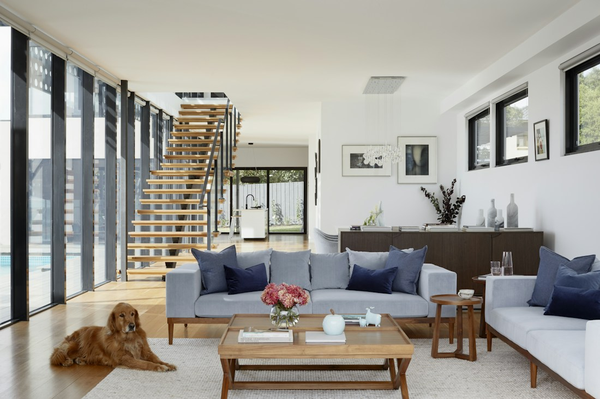

STRONG FOUNDATIONS. LASTING RELATIONSHIPS.
BUILT RIGHT.
BUILT FOR
WHAT’S NEXT.
From the first conversation to the final detail. We build spaces that work hard, feel right, and stand the test of time.
YOUR VISION. OUR CRAFT.
Something solid starts here.

01 / WHAT WE DO
GOOD BONES.
GREAT POSSIBILITIES.
One team, from the ground up. A hands-on approach to every build, big or small.
02 / SELECTED WORK
THE WORK SPEAKS
FOR ITSELF.
A few ways a vision becomes a place.
Illustrative projects for this website concept.


MAKE THE
DIFFERENCE.
03 / THE IRONWOOD APPROACH
SOLID WORK.
STRAIGHT TALK.
Good construction starts long before the first board is cut. It starts with listening, asking the right questions, and making a plan everyone can stand behind.
Our approach is simple: respect the vision, communicate clearly, and care about the details. Because how a project gets built matters just as much as the finished space.
A clear path forward
Thoughtful planning, defined scope, and a shared understanding of what comes next.
Craft in every corner
Materials chosen with purpose. Details finished with care. A space that feels considered.
04 / FROM IDEA TO BUILT
LESS GUESSWORK.
MORE FORWARD.
A clear process makes room for a better building experience. Here’s how we get there.
01
LET’S TALK.
Tell us what you have in mind. We’ll talk through your goals, your site, and what a successful project looks like.
02
MAKE A PLAN.
Bring the details into focus. Scope, selections, budget, and schedule take shape before work begins.
03
BUILD IT RIGHT.
Watch the plan become a place, with clear communication and care at every stage of construction.
04
MAKE IT YOURS.
Walk through the finished space together, review the details, and step into what comes next.
A FEW THINGS YOU MAY BE WONDERING
BEFORE WE
BREAK GROUND.
Where should I start?
Start with what you know: the kind of space you need, where it will be, and what you want it to do. A few photos, a rough sketch, or a list of ideas can help shape the first conversation.
Do I need finished plans?
You can begin the conversation before every detail is decided. The first step is understanding the project and identifying the design, planning, and construction support it needs.
What affects the project timeline?
Scope, design decisions, site conditions, permitting, and material availability all influence the schedule. A project-specific timeline should be established during planning.
How do I get a website like this?
This is a construction website concept created by Saber Tech. Select “Start your project” to open the Saber Tech project brief and tell us about the website you need.
EVERY GREAT BUILD STARTS WITH A CONVERSATION.
LET’S BUILD
SOMETHING LASTING.
A new space. A fresh start. A vision worth building.
Let’s hear what you have in mind.
Your next step opens the Saber Tech project brief.